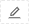
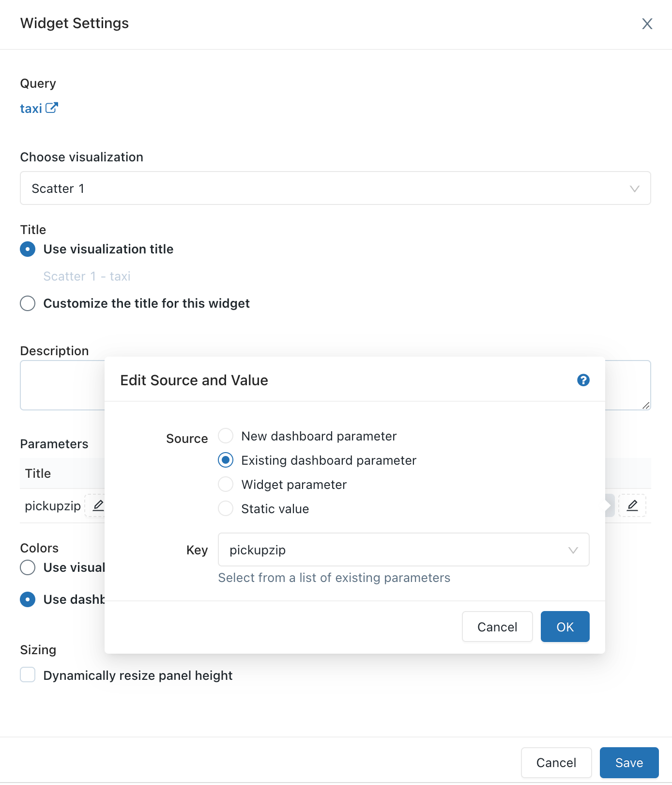

Databricks SQL dashboards
You can use SQL editor to build a Databricks SQL dashboard that combines visualizations and text boxes that provide context with your data.
View and organize dashboards
Two ways to view dashboards:
View new dashboards in the workspace browser by clicking
 Workspace in the sidebar. These dashboards are viewable, by default, in the Home folder. Users can organize dashboards into folders in the workspace browser along with other Databricks objects. To view and organize currently existing dashboards, users (or workspace admins) must migrate them into the workspace browser. For information about the workspace browser, including migration, see Workspace browser.
Workspace in the sidebar. These dashboards are viewable, by default, in the Home folder. Users can organize dashboards into folders in the workspace browser along with other Databricks objects. To view and organize currently existing dashboards, users (or workspace admins) must migrate them into the workspace browser. For information about the workspace browser, including migration, see Workspace browser.All dashboards, regardless of creation time or migration status, can also be viewed by clicking the Dashboards in the sidebar.
By default, dashboards are sorted in reverse chronological order. Reorder the list by clicking the column headings.
Organize dashboards into folders in the workspace browser
Organize new and existing dashboards into folders in the workspace browser along with other Databricks objects. See Workspace browser.
Create a dashboard
Follow these steps to create a new dashboard. To clone an existing dashboard, see Clone a dashboard.
Do one of the following:
Click
 New in the sidebar and select Dashboard.
New in the sidebar and select Dashboard.Click Dashboards in the sidebar and click + Create Dashboard.
Click
Workspace in the sidebar and click + Create Dashboard.If you don’t want to start from an empty dashboard, you can create a quick dashboard:
Click
 Catalog in the sidebar.
Catalog in the sidebar.Browse to the table, then in the Actions menu, click Create a quick dashboard.
In the configuration page, select columns of interest and create a dashboard and supporting queries that provide some basic information using those columns and showcase dashboard-level parameters and other capabilities.
Continue with the following steps to customize the dashboard.
Enter a name for the dashboard.
When you create a dashboard, you have the option to specify a warehouse to be used for manual refresh. If you do not select and save a warehouse to the dashboard, it will fall back to using the warehouse saved for individual queries.
Note
If you select and save a warehouse to the dashboard and then it is deleted or otherwise becomes unavailable, a manual refresh will fail until a new warehouse is assigned.
Add content to the dashboard by clicking Add and selecting the type of content to add:
Click Textbox to add commentary.
Enter text. Style the text boxes using Markdown.
To add a static image in a text box, use markdown image syntax with a description and publicly available URL:
. For example, the following markdown inserts an image of the Databricks logo:. To resize the image, resize the widget dimensions.To add an image from DBFS, add markdown image syntax with a desired description and FileStore path:
. To resize the image, resize the widget dimensions.
Important
Images used in a dashboard that are stored in DBFS will not render when doing an on-demand pdf or subscription
Click Visualization to add a query visualization.
Select a query. Search existing queries or pick a recent one from the pre-populated list. If a query was saved with the Limit 1000 setting, the query in the dashboard limits results to 1000 rows.
In the Choose Visualization drop-down, select the visualization type.
Click Add to Dashboard.
Drag and drop content blocks on the dashboard.
Click Done Editing.
You can also create a dashboard with the Databricks Terraform provider and databricks_sql_dashboard. You can create a widget for a dashboard with databricks_sql_widget. You can create a sample dashboard with dbsql-nyc-taxi-trip-analysis.
Clone a dashboard
You can clone the dashboard and all upstream queries if you have the Can Run, Can Edit, and Can Manage permissions on a dashboard and each of its upstream queries. You become the owner of the new dashboard and queries.
Important
Sharing settings, alerts, and subscriptions are not copied to the new dashboard.
To clone a dashboard:
Open the
 kebab menu at the top-right of the dashboard and select Clone.
kebab menu at the top-right of the dashboard and select Clone.Enter a name for the new dashboard, then click Confirm.
Note
Cloning is guaranteed to work reliably with fewer than 50 visualizations and fewer than 30 queries, including queries that are used to generate query-based dropdown list parameters. Attempting to clone a dashboard with visualizations or queries that exceed these limits may fail.
For more information about query-based dropdown list parameters, see Query Based Dropdown List.
Using query parameters in dashboards
Queries can optionally leverage parameters or static values. When a visualization based on a parameterized query is added to a dashboard, the visualization can either be configured to use a:
Widget parameter
Widget parameters are specific to a single visualization within a dashboard, appear within the visualization panel, and the parameter values specified apply only to the query underlying the visualization.
Dashboard parameter
Dashboard parameters can apply to multiple visualizations. When you add a visualization based on a parameterized query to a dashboard, by default, the parameter will be counted as a dashboard parameter. Dashboard parameters are configured for one or more visualizations within a dashboard and appear at the top of the dashboard. The parameter values specified for a dashboard parameter apply to visualizations reusing that particular dashboard parameter. A dashboard can have multiple parameters, each of which may apply to some visualizations and not others.
Static value
Static values are used instead of a parameter that responds to changes. Static values allow you to hard code a value in place of a parameter and will make the parameter “disappear” from the dashboard or widget where it previously appeared.
When you add a visualization containing a parameterized query, you can choose the title and the source for the parameter in the visualization query by clicking the appropriate pencil icon . You can also select the keyword and a default value. See Parameter properties.
After adding a visualization to a dashboard, you can access the parameter mapping interface by clicking the kebab menu on the upper-right of a dashboard widget and then clicking Change widget settings.
Parameter properties
The dashboard widget parameter properties are:
Title: The display name that appears beside the value selector on your dashboard. It defaults to the title set in the query editor. To edit how it appears within the dashboard, click the pencil icon . Titles are not displayed for static dashboard parameters because the value selector is hidden. If you select Static value as your Value Source then the Title field is grayed out.
Keyword: The string literal for this parameter in the underlying query. This is useful for debugging if your dashboard does not return the expected results.
Default Value: The value set for that parameter on dashboard load until another is selected and changes applied. To change this default, open the underlying query in the SQL editor, change the parameter to your desired value, and click the Save button.
Value Source: The source of the parameter value. Click the pencil icon to choose a source.
New dashboard parameter: Create a new dashboard-level parameter. This lets you set a parameter value in one place on your dashboard and map it to one or more visualizations. Parameters must have unique names within the dashboard.
Existing dashboard parameter: Map this visualization’s parameter to an existing dashboard parameter. You must specify which pre-existing dashboard parameter.
Widget parameter: Displays a value selector inside your dashboard widget. This is useful for one-off parameters that are not shared between widgets.
Static value: Choose a static value for the widget, regardless of the values used on other widgets. Statically mapped parameter values do not display a value selector anywhere on the dashboard, which is more compact. This lets you take advantage of the flexibility of query parameters without cluttering the user interface on a dashboard when certain parameters are not expected to change frequently.

Edit a dashboard
To open the dashboard for editing, open the kebab menu at the top-right of the dashboard and select Edit.
While editing, you can add and remove content, edit visualizations, and apply filters. To change the order in which parameters are shown, you can click and drag each parameter to the desired position.
Filter across multiple queries
To filter across multiple queries on a dashboard:
Go to your Databricks SQL dashboard.
In Edit mode, click Add, and then click Filter.
Select New dashboard filter and choose the queries and columns to filter. You can also choose to import filters from existing queries by selecting Existing query filters and choosing to import a filter from a SQL query editor. The queries you choose must belong to the same catalog and schema.
Click Save. This creates a filter that contains the union of all dropdown options.
Note
The queries you choose must belong to the same catalog and schema. Some old queries may not be compatible with filtering across multiple queries.
Edit a dashboard visualization
To edit a visualization on the dashboard while in edit mode, select the visualization you wish to edit and then click the kebab menu at the top-right of the visualization. In the displayed list, select Edit visualization.

Add content to a dashboard
Open the dashboard for editing.
Click Add Textbox or Add Widget.
Click Add to Dashboard.
Click Done Editing.
You can also add a visualization to a dashboard in the SQL editor.
Remove content from a dashboard
Click the or hover over the object, click the
kebab menu at the top-right of the widget and select Remove from Dashboard.Click Delete.
Dashboard filters
When queries have filters, you must also apply filters at the dashboard level. Select the Use Dashboard Level Filters checkbox to apply the filter to all queries.
Customize dashboard colors
You can customize the dashboard color palette, including creating a color palette.
Create a color palette
To create a custom color palette for a dashboard:
Click
kebab menu at the upper-right, and click Edit.Click Colors.
To import an existing color palette, click Import and select the palette. You can customize the imported palette.
To create a new palette, or to customize an imported palette, do the following:
To add a new color, click Add.
For a newly added color or an existing color, specify the color by doing either of the following:
Click the square and select the new color by clicking it in the color selector or using the eyedropper.
Click the text field next to the square and enter a hexadecimal value.
Click Apply.
Stop using a custom color palette
To remove a custom color palette:
Click
kebab menu at the upper-right, and click Edit.Click Colors.
Click Clear.
Click Apply.
Use a different color palatte for a visualization
By default, if a color palette has been applied in a dashboard, all visualizations will use that color palette. If you’d like to use different colors for a visualization, you can override this behavior:
Click
kebab menu for the visualization in the dashboard and click Edit.Click the checkbox next to Retain colors specified on visualization.
Click OK.
Refresh a dashboard
Databricks SQL dashboards are designed for efficient loading as they retrieve data from a cache that renews each time a query runs. However, your dashboards can become outdated if you don’t run the associated queries regularly. To prevent your dashboards from becoming stale, you can refresh the dashboard to rerun the associated queries.
Each time a dashboard is refreshed, either manually or on a schedule, all queries referenced in the dashboard are refreshed. When an individual visualization is refreshed, the upstream query is refreshed. Manually refreshing the dashboard or individual visualization does not refresh queries used in Query Based Dropdown Lists. For details on Query Based Dropdown Lists, see Query Based Dropdown List.
Refresh behavior and execution context
When a dashboard is “Run as Owner” and a schedule is added, the owner’s credential is used for execution, and anyone with at least “Can Run” sees the results of those refreshed queries.
When a dashboard is “Run as Viewer” and a schedule is added, the owner’s credential is used for execution, but only the owner sees the results of the refreshed queries; all other viewers must manually refresh to see updated query results.
Manually refresh a dashboard
To force a refresh, click Refresh on the upper-right of the dashboard. This runs all the dashboard queries and updates its visualizations.
Automatically refresh a dashboard
A dashboard’s owner and users with the Can Edit permission can configure a dashboard to automatically refresh on a schedule. To automatically refresh a dashboard:
Click Schedule at the upper-right of the dashboard. Then, click Add schedule.
Use the dropdown pickers to specify the frequency, period, starting time, and time zone. Optionally, select the Show cron syntax checkbox to edit the schedule in Quartz Cron Syntax.
Choose More options to show optional settings. You can choose:
A name for the schedule.
A SQL warehouse to power the query. By default, the SQL warehouse used for ad hoc query execution is also used for a scheduled job. Use this optional setting to select a different warehouse to run the scheduled query.
Note
This warehouse can be different than the one used for manual refresh.
Optional: In the Subscribers tab, enter a list of email addresses to notify when the dashboard is automatically updated. Each email address must be associated with a Databricks account with workspace access or defined as a notification destination in the workspace settings. Notification destinations are configured by a workspace admin.
Click Create. The Schedule label changes to Schedule(1).
Edit sharing settings.
Note
Dashboard permissions are not linked to schedule permissions. After creating your scheduled refresh interval, edit the schedule permissions to provide access to other users. Only users with Can Manage permission can edit the schedule or edit the subscriber list.
Click the
kebab menu.Click Edit schedule permissions.
Choose a user, group, or service principal from the drop-down menu in the dialog.
Choose Can View to allow the selected users to view the schedule configuration.
Can View or Can Manage Run permission allows the assigned recipient to see that a schedule exists, as well as other properties like report cadence and number of subscribers. Can Manage allows the recipient to modify the schedule, subscriber list, and schedule permission. Can Manage permission also allows recipient to pause or unpause the schedule.
Refresh behavior on an open dashboard
When you open a dashboard set to Run as Owner, it displays data from the latest dashboard update, regardless of whether it was scheduled or manually refreshed. If a dashboard is open in a browser window, and a query is modified or a scheduled run updates dashboard results, the changes won’t be reflected immediately. The updated results will appear the next time you open the dashboard or refresh the open browser window.
Dashboard snapshot subscriptions
You can periodically export and email dashboard snapshots. Dashboard snapshots are taken from the default dashboard state, meaning that any interaction with the filters and visualizations is not included in the snapshot.
If you have at least Can Edit permission, you can create a refresh schedule and subscribe other users, who will receive email snapshots of the dashboard every time it’s refreshed. To add subscribers, enter users or groups in the Subscribers tab as described above. Eligible subscribers include workspace users and notification destinations.
Note
Notification destinations are configured by a workspace admin. To learn how to configure a notification destination, see Manage notification destinations.
There is a 6 MB file size limit for email attachments. If a dashboard subscription email exceeds the 6 MB size limit, the email will omit the inline dashboard snapshot and include only a PDF of the dashboard snapshot.
If the PDF snapshot file exceeds 6 MB, the subscription email will omit the PDF and instead include a link to the refreshed dashboard. The email will have a warning note detailing the current dashboard size. (Users can test the PDF snapshot size by manually downloading a PDF of the dashboard.)
Temporarily pause scheduled dashboard updates
If a dashboard is configured for automatic updates, and you have at least Can View permission on the schedule, the label on the Schedule button reads Schedule(#), where the # is the number of scheduled events that are visible to you. Additionally, if you have at least Can Manage permission on the schedule, you can temporarily pause the schedule. This is helpful to avoid sending updates while testing changes to the dashboard. To temporarily pause scheduled dashboard updates without modifying the list of subscribers:
Click Schedule(#).
Click the
kebab menu.Click Pause.
Download as PDF
To download a dashboard as a PDF file, click the kebab menu at the top-right of the dashboard and select Download as PDF.
Move a dashboard to Trash
To move a dashboard to Trash, click the kebab menu at the top-right of the dashboard and select Move to Trash. Confirm by clicking Move to Trash.
Restore a dashboard from Trash
Click Dashboards in the sidebar.
Click .
Click a dashboard.
Click the
kebab menu at the top-right of the dashboard and select Restore.
Permanently delete a dashboard
In the All Dashboards list, click .
Click a dashboard.
Click the
kebab menu at the top-right of the dashboard and select Delete.
Open a query
To open the query displayed in a widget in the SQL editor, click the kebab menu at the top-right of the widget and select View Query.
Configure dashboard permissions and dashboard ownership
To configure who can manage and run dashboards and to transfer dashboard ownership, see Share Databricks SQL dashboards.
Access admin view
A Databricks workspace admin user has view access to all dashboards in the workspace. In this view a workspace admin can view and delete any dashboard. However, a workspace admin can’t edit a dashboard if it is not shared with the admin.
To view all dashboards:
Click Dashboards in the sidebar.
Click Admin View on the right panel.